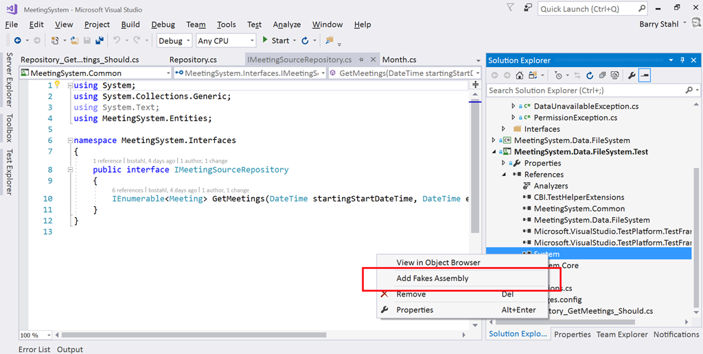

Tag: framework
Meta-Abstraction -- You Ain't Gonna Need It!
Posted by bsstahl on 2020-05-18 and Filed Under: development
When we look at the abstractions in our applications, we should see a description of the capabilities of our applications, not the capabilities of the abstraction
Let’s start this discussion by looking at an example of a simple repository.
public interface IMeetingReadRepository { IEnumerable<Meeting> GetMeetings(DateTime start, DateTime end); }
It is easy to see the capability being described by this abstraction – any implementation of this interface will have the ability to load a collection of Meeting objects that occur within a given timeframe. There are still some unknown details of the implementation, but the capabilities are described reasonably well.
Now let’s look at a different implementation of the Repository pattern.
public interface IReadRepository<T> { IEnumerable<T> Get(Func<T, bool> predicate); }
We can still see that something is going to be loaded using this abstraction, we just don’t know what, and we don’t know what criteria will be used.
This 2nd implementation is a more flexible interface. That is, we can use this interface to describe many different repositories that do many different things. All we have described in this interface is that we have the ability to create something that will load an entity. In other words, we have described our abstraction but said very little about the capabilities of the application itself. In this case, we have to look at a specific implementation to see what it loads, but we still have no idea what criteria can be used to load it.
public class MeetingReadRepository : IReadRepository<Meeting> { IEnumerable<Meeting> Get(Func<Meeting, bool> predicate); }
We could extend this class with a method that specifically loads meetings by start and end date, but then that method is not on the abstraction so it cannot be used without leaking the details of the implementation to the application. The only way to implement this pattern in a way that uses the generic interface, but still fully describes the capabilities of the application is to use both methods described above. That is, we implement the specific repository, using the generic repository – layering abstraction on top of abstraction, as shown below.
public interface IMeetingReadRepository : IReadRepository<Meeting> { IEnumerable<Meeting> GetMeetings(DateTime start, DateTime end); } public class MeetingReadRepository : IMeetingReadRepository { IEnumerable<Meeting> GetMeetings(DateTime start, DateTime end) => Get(m => m.Start >= start && m.Start < end) // TODO: Implement IEnumerable<Meeting> Get(Func<Meeting, bool> predicate) => throw new NotImplementedException(); }
Is this worth the added complexity? It seems to me that as application developers we should be concerned about describing and building our applications in the simplest, most maintainable and extensible way possible. To do so, we need seams in our applications in the form of abstractions. However, we generally do not need to build frameworks on which we build those abstractions. Framework creation is an entirely other topic with an entirely different set of concerns.
I think it is easy to see how quickly things can get overly-complex when we start building abstractions on top of our own abstractions in our applications. Using Microsoft or 3rd party frameworks is fine when appropriate, but there is generally no need to build your own frameworks, especially within your applications. In the vast majority of cases, YAGNI.
Did I miss something here? Do you have a situation where you feel it is worth it to build a framework, or even part of a framework, within your applications. Please let me know about it @bsstahl.
Tags: abstraction apps coding-practices development entity flexibility framework generics principle yagni interface
South Florida Code Camp 2019
Posted by bsstahl on 2019-03-03 and Filed Under: event
Thanks again to all the organizers, speakers and attendees of the 2019 South Florida Code Camp. As always, it was an amazing and fun experience.
The slides for my presentation are online Intro to WebAssembly and Blazor and the Blazor Chutes & Ladders Simulation sample code can be found in my AIDemos GitHub Repo.
Tags: assembly blazor code camp code sample development framework introduction microsoft presentation
Intro to WebAssembly Using Blazor
Posted by bsstahl on 2018-09-26 and Filed Under: event
I will be speaking tonight, 9/26/2018 at the Northwest Valley .NET User Group and tomorrow, 9/27/2018 at the Southeast Valley .NET User Group. I will be speaking on the subject of WebAssembly. The talk will go into what WebAssembly programs look and act like, and how they run, then explore how we as .NET developers can write WebAssembly programs with Microsoft’s experimental platform, Blazor.
Want to run your .NET Standard code directly in the browser on the client-side without the need for transpilers or browser plug-ins? Well, now you can with WebAssembly and Blazor.
WebAssembly (WASM) is the W3C specification that will be used to provide the next generation of development tools for the web and beyond. Blazor is Microsoft's experiment that allows ASP.Net developers to create web pages that do much of the scripting work in C# using WASM.
Come join us as we explore the basics of WebAssembly and how WASM can be used to run existing C# code client side in the browser. You will walk away with an understanding of what WebAssembly and Blazor can do for you and how to immediately get started running your own .NET code in the browser.
The slide deck for these presentations can be found here IntroToWasmAndBlazor-201809.pdf.
Tags: apps community csharp framework html5 introduction microsoft presentation phoenix speaking user group ux wasm webassembly w3c
Testing the Untestable with Microsoft Fakes
Posted by bsstahl on 2017-03-20 and Filed Under: development
It is fairly easy these days to test code in isolation if its dependencies are abstracted by a reusable interface. But what do we do if the dependency cannot easily be referenced via such an interface? Enter Shims, from the Microsoft Fakes Framework(formerly Moles). Shims allow us to isolate our testing from any dependent methods, including methods in assemblies we do not control, even if those methods are not exposed through a reusable interface. To see how easy it is, follow along with me through this example.
In this sample code on GitHub, we are building a repository for an application that currently gets its data from a file exported from a system that tracks scheduled meetings. It is very likely that the system will, in the future, expose a more modern interface for that data so we have isolated the data storage using a simple Repository interface that has one method. This method, called GetMeetings returns a collection of Meeting entities that start during the specified date range. The method will return an empty collection if no data is found matching the specified criteria, and could throw either of 2 custom errors, a PermissionsExceptionwhen the user does not have the proper permissions to access the information, and a DataUnavailableException for when the data source is unavailable for any other reason, such as a network outage or if the data file cannot be located.
It is important to point out why a custom exception should be thrown when the data file is not found, rather than allowing the FileNotFoundException to bubble-up. If we allow the implementation-specific exception to bubble, we have exposed an implementation detail to the caller. That is, the calling code is now aware of the fact that this is a file system implementation. If code is written in a client that traps for FileNotFoundException, then the repository implementation is swapped-out for a SQL server implementation, the client code will have to change to handle the new types of errors that could be thrown by that implementation. This violates the Dependency Inversion principle, the “D” from the SOLID principles. By exposing only a custom exception, we are hiding those implementation details from the caller.
Downstream clients can easily test code that uses this repository without having to actually access the repository implementation because we have exposed the IMeetingSourceRepository interface. However, it is a bit more difficult to actually test the repository implementation itself. We have a few options here:
- Create data files that hold known data samples and load those files during unit testing.
- Create a wrapper around the System.IO namespace that exposes an interface, such as in the System.IO.Abstractions project.
- Don’t test any code that requires reaching-out to the file system.
Since I am of the opinion that 100% code coverage is both reasonable, and desirable (although not a measurable goal), I will summarily dispose of option 3 for the purpose of this analysis. I have used option 2 many times in my life, and while employing wrapper code is a valid and reasonable solution, it adds additional code to my production deployments that is very limited in terms of what it adds to the loose-coupling of my solution since I already am loosely-coupled to this implementation via the IMeetingSourceRepository interface.
Even though it is far from a perfect solution (many would consider them more integration tests than unit tests), I initially selected option 1 for this implementation. That is, I created data files and deployed them along with my tests. You can see the test files I created in the Data folder of the MeetingSystem.Data.FileSystem.Test project. These files are deployed alongside my tests using the DeploymentItem directive that decorates the Repository_GetMeetings_Should class of the test project. Using this method, I was able to create tests that:
- Verify that the correct # of meetings are returned from a file
- Verify that meetings are properly filtered by the StartDateTime of the meeting
- Validate the data elements returned from the file
- Validate that the proper custom exception is thrown if a FileNotFoundException is thrown by the underlying code
So we have verified nearly everything we need to test in our implementation. We’ve verified that the data is returned properly, and that one of our custom exceptions is being returned. But what about the PermissionsException? We were able to simulate a FileNotFoundException in our tests by just using a bad filename, but how do we test for a permissions problem? The ReadAllText method of the File object from System.IO will throw a System.Security.SecurityException if the file cannot be read due to a permissions problem. We need to trap this exception and throw our own exception, but how can we validate that we have successfully done so and that the functionality remains intact through future refactoring? How can we simulate a permissions exception on a file that we have enough permission on to deploy to a test folder? Enter Shims from the Microsoft Fakes Framework.
Instead of having our tests actually reach-out to the file system and actually try to load a file, we can intercept calls to the System.IO.File.ReadAllText method and have those calls execute some delegate code instead. This code, which we write in our test methods, can be specific to each test and exist only within the context of the test. As a result, we are not deploying any additional code to production, while still thoroughly validating our code. In fact, using this methodology, I could re-implement my previous tests, including my test data in the tests themselves, making these tests better unit tests. I could then reserve tests that actually reach out to files for integration test libraries that are run less frequently, and perhaps even behind the scenes.
Note: If you wish to follow-along with these instructions, you can grab the code from the DemoStart branch of the GitHub repo, rather than the Master branch where this is already done.
To use Shims, we first have to create a Fakes Assembly. This is done by right-clicking on the System reference in the test project from Visual Studio 2017, and selecting “Add Fakes Assembly” (full framework only – not yet available for .NET Core assemblies). Be sure to do this in the test project since we don’t want to actually deploy the Fakes assembly in our production code. Using the add fakes assembly menu item does 2 things:
- Adds a reference to Microsoft.QualityTools.Testing.Fakes assembly
- Creates 2 .fakes XML files in the Fakes folder within the test project. These items are built into corresponding fakes dll files that are deployed with the test project and used to provide stub and shim objects that mimic the objects in the selected assemblies. These fake objects reside in the same namespace as their “real” counterparts, except with “Fakes” on the end. Thus, our fake File object will reside in the System.IO.Fakes namespace.

The next step in using shims is to create a ShimsContext within a Using statement. Any method calls that execute within this context can be intercepted and replaced by our delegates. For example, a test that replaces the call to ReadAllText with a method that returns a single line of constant data can be seen below.
Methods on shim objects are referenced through properties of the fake object. These properties are of type FakesDelegate.Func and match the signature of the method being shimmed. The return data type is also appended to the property name so that each item’s signature can be represented with a different property name. In this case, the ReadAllText method of the File object is represented in the System.IO.Fakes.File object as a property called ReadAllTextString, of type FakesDelegate.Func<string, string>, since the method takes a string parameter (the path of the file), and returns a string (the text contents of the file). If we assign a method delegate to this property, that method will be executed in place of the call to System.IO.File.ReadAllText whenever ReadAllText is called within the ShimContext.
In the gist shown above, the variable p represents the input parameter and will hold the path specified in the test (in this case “April2017.abc”). The return value for our delegate method comes from the constant string dataFile. We can put anything we want here. We can replace the delegate with a call to an anonymous method, or with a call to an existing method. We can return a value gleaned from an external source, or, as is needed for our permissions test, throw an exception.
For the purposes of our test to verify that we throw a PermissionsException when a SecurityException is thrown, we can replace the value of the ReadAllTextString property with our delegate which throws the exception we need to test for, as seen here:
System.IO.Fakes.ShimFile.ReadAllTextString =
p => throw new System.Security.SecurityException("Test Exception");
Then, we can verify in our test that our custom exception is thrown. The full working example can be seen by grabbing the Master branch of the GitHub repo.
What can you test with these Shim objects that you were unable to test before? Tell me about it @bsstahl.
Tags: abstraction assembly code sample framework fakes interface moles mstest solid tdd testing unit testing visual studio
Is a Type an Implementation of an Interface?
Posted by bsstahl on 2016-11-17 and Filed Under: development
One of the techniques I recommend highly in my Simplify Your API talk is the use of extension methods to hide the complexity of lower-level API functionality. A good example of a place to use this methodology came-up last night in a great Reflection talk by Jeremy Clark (Twitter, Blog) at the NorthWest Valley .NET User Group.

Jeremy was demonstrating a method that would spin-through an assembly and load all classes within that assembly that implemented a particular interface. The syntax to do the checks on each type were just a bit more obtuse than Jeremy would have liked them to be. As we left that talk, I only half-jokingly told Jeremy that I was going to write him an extension method to make that activity simpler. Being a man of my word, I present the code below to do just that.
Tags: assembly api class code sample coding-practices community csharp development extension method framework generics interface presentation professional development reflection user group
Not Following API Guidelines Has Impact
Posted by bsstahl on 2016-01-25 and Filed Under: development
Good API design requires the developer to return responses that provide useful and understandable information to the consumers of the API. To effectively communicate with the consumers, these responses must utilize standards that are known to the developers who will be using them. For .NET APIs, these standards include:
- Implementing IDisposable on all objects that need disposal.
- Throwing a NotImplementedException if a method is on the interface and is expected to be available in the future, but is not yet available for any reason.
- Throwing an ArgumentException or ArgumentNullException as appropriate to indicate that bad input has been supplied to a method.
- Throwing an InvalidOperationException if the use of a method is inappropriate or otherwise unavailable in the current context.
One thing that should absolutely not be done is returning a NULL from a method call unless the NULL is a valid result of the method, based on the provided input.
I have spent the last few weeks working with a new vendor API. In general, the implementation of their API has been good, but it is clear that .NET is not their primary framework. This API does 2 things that have made it more difficult than necessary for me to work with the product:
- Disposable objects don’t implement IDisposable. As a result, I cannot simply wrap these objects in a Using statement to handle disposal when they go out of scope.
- Several mathematical operators were overloaded, but some of them were implemented simply by returning a NULL. As a result:
- I had to decompile their API assembly to determine if I was doing something wrong.
- I am still unable to tell if this is a permanent thing or if the feature will be implemented in a future release.
Please follow all API guidelines for the language or framework you are targeting whenever it is reasonable and possible to do so.
Tags: api coding-practices framework interface standardization
Introducing TestHelperExtensions
Posted by bsstahl on 2015-08-26 and Filed Under: development
TL;DR Version
I've released a new Open-Source library of extension methods that can be used to create more effective unit and integration tests. This library is called TestHelperExtensions. The source code is available on GitHub (pull requests welcome), a .NET 4 package is available via NuGet, and the documentation is available here. The goal is to allow anyone to have access to the same set of test helpers I have been using, and building up, for many years.
The Story
I have been giving Test Driven Development (TDD) sessions at code camps and conferences for a number of years. During those sessions, I spend a lot of time in code, building up a test suite for a production application, and demonstrating the process I use for TDD. Part of this process is using a set of extension methods to perform common tasks, such as generating test data, and doing comparisons of DateTime values. Many people have asked for access to this library during these sessions and my answer has always been the same, "you can grab it from the sample code". Now, I've decided to make it easier for anyone to include it in their projects via NuGet, and to allow the community the opportunity to extend and modify the library on GitHub.
Going Forward
I still have a small backlog of features I'd like to add to this tool. After that, It's up to you what happens with it. If you have a feature suggestion, please let me know. @bsstahl is the best place to start a conversation about this, or any development topic with me. You can also create an issue on GitHub, or simply submit a pull request. I'd love to hear how you are using this library, and anything that can be done to make it more effective for you.
Tags: agile community development framework open source tdd testing unit testing visual studio
Are you Ready for the Next Episode?
Posted by bsstahl on 2015-06-29 and Filed Under: development
In the last episode of “Refactoring my App Development Mojo”, I explained how I had discovered my passion for building Windows Store applications by using a hybrid solution of HTML5 with very minimal JavaScript, bound to a view-model written in C# running as a Windows Runtime Component, communicating with services written in C# using WCF. The goal was to do as much of the coding as possible in the technologies I was very comfortable with, C# and HTML, and minimize the use of those technologies which I had never gotten comfortable with, namely JavaScript and XAML.
While this was an interesting and somewhat novel approach, it turned out to have a few fairly significant drawbacks:
- Using this hybrid approach meant there were two runtimes that had to be initialized and operating during execution, a costly drain on system resources, especially for mobile devices.
- Applications built using this methodology would run well on Windows 8 and 8.1 machines, as well as Windows Phone devices, but not on the web, or on Android or iDevices.
- The more complex the applications became, the more I hand to rely on JavaScript anyway, even despite putting as much logic as possible into the C# layers.
On top of these drawbacks, I now feel like it is time for me to get over my fear of moving to JavaScript. Yes, it is weakly typed (at least for now). Yes, its implementation of many object-oriented concepts leave a lot to be desired (at least for now), yes, it can sometimes make you question your own logical thinking, or even your sanity, with how it handles certain edge-cases. All that being said however, JavaScript, in some form, is the clear winner when it comes to web applications. There is no question that, if you are building standard front-ends for you applications, you need JavaScript.
So, it seems that it is time for me to move to a more standard front-end development stack. I need one that is cross-platform, ideally providing a good deployment story for web, PC, tablet & phone, and supporting all major platforms including Android, iDevices & Windows phones and tablets. It also needs to be standards-based, and work using popular frameworks so that my apps can be kept up-to-date with the latest technology.
I believe I have found this front-end platform in Apache Cordova. Cordova takes HTML5/JavaScript/CSS3 apps that can already work on the web, and builds them into hybrid apps that can run on virtually any platform including iPhones and iPads, Android phones and tablets, and Windows PCs, phones and tablets. Cordova has built-in support in Visual Studio 2015, which I have been playing with for a little while and seems to have real promise. There is also the popular Ionic Framework for building Cordova apps which I plan to learn more about over the next few weeks.
I’ll keep you informed of my progress and let you know if this does indeed turn out to be the best way for me to build apps. Stay tuned.
Tags: development device framework html5 ionic javascript open source phone standardization visual studio xaml windows apache cordova
Code Sample for My TDD Kickstart Sessions
Posted by bsstahl on 2012-02-13 and Filed Under: development
The complete, working application for my .NET TDD Kickstart sessions can be found here.
Unzip the files into a solution folder and open the Demo.sln solution in a version of Visual Studio 2010 that has Unit Testing capability (Professional, Premium or Ultimate). Immediately, you should be able to compile the whole solution, and successfully execute the tests in the Bss.QueueMonitor.Test and Bss.Timing.Test libraries.
To get the tests in the other two test libraries (Bss.QueueMonitor.Data.EF.Test & Bss.QueueMonitor.IntegrationTest) to pass, you will need to create the database used to store the monitored data in the data-tier and integration tests, and enable MSMQ on your system so that a queue to be monitored can be created for the Integration test.
The solution is configured to use a SQLExpress database called TDDDemo. You can use any name or SQL implementation you like, you’ll just need to update the configuration of all of the test libraries to use the new connection. The script to execute in the new database to create the table needed to run the tests can be found in the Bss.QueueMonitor.Data.EF library and is called QueueDepthModel.edmx.sql.
You can install Message Queuing on computers running Windows 7 by using Programs and Features in the Control Panel. You do not need to create any specific queue because the integration test creates a queue for each test individually, then deletes the queue when the test is complete.
If you have any questions or comments about this sample, please start a conversation in the Fediverse @bsstahl or Contact Me.
Tags: abstraction agile assert code camp coding-practices community conference csharp development di event framework ioc tdd testing unit testing visual studio
.NET TDD Kickstart
Posted by bsstahl on 2012-01-26 and Filed Under: event development
I head out to Fullerton tomorrow for the start of my .NET TDD Kickstart world tour. 
In this session, the speaker and the audience will "pair up" for a coding session which will serve as an introduction to Test Driven Development in an Agile environment. We will use C#, Visual Studio and Rhino Mocks to unit test code to be built both with and without dependencies. We will also highlight some of the common issues encountered during TDD and discuss strategies for overcoming them.
I will be presenting this session at numerous venues around the country this year, including, so far:
- Southern California Code Camp – Fullerton in January
- South Florida Code Camp – Ft. Lauderdale in February
- New Mexico .NET User’s Group – Albuquerque in March
- Twin Cities Code Camp – Minneapolis in April
If you are interested in having me present this or another session at your event, please contact me.
There is much more than an hour’s worth of material to be presented, so instead of trying to rush through everything I want to talk about during this time, I’ve instead taken some questions from this presentation and posted them below. Please contact me if you have any additional questions, need clarification, or if you have an suggestions or additions to these lists.
Update: I have moved the FAQ list here to allow it to be maintained separately from this post.
Tags: abstraction agile assert code camp coding-practices community conference csharp development di framework ioc tdd testing unit testing visual studio
Profile Provider Exception
Posted by bsstahl on 2006-10-07 and Filed Under: development
While working on a custom Profile provider, I needed to set the values in a SettingPropertyValuesCollection object to pass to the SetPropertyValues method of the provider. Using the code below, I was always getting a NullReferenceException when the provider attempted to read the values out of the collection.
Dim objProperties As New System.Configuration.SettingsPropertyValueCollection
Dim objProperty As New System.Configuration.SettingsProperty"BirthDate")
objProperty.PropertyValue = #2/14/2004#
Dim objPropertyValue As New System.Configuration.SettingsPropertyValue(objProperty)
objProperties.Add(objPropertyValue)
The problem occurs because the collection doesn't know what type to assign the value to coming out of the collection. By modifying the code as follows, I specify the type of the property, and the process executes as expected.
Dim objProperties As New System.Configuration.SettingsPropertyValueCollection
Dim objProperty As New System.Configuration.SettingsProperty("BirthDate")
objProperty.PropertyValue = #2/14/2004#
objProperty.PropertyType = GetType(System.DateTime)
Dim objPropertyValue As New System.Configuration.SettingsPropertyValue(objProperty)
objProperties.Add(objPropertyValue)